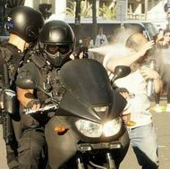

<html>
<head>
<title>Ricardo Cabrera - Represión policial y lógica mediática</title>
<meta http-equiv="Content-Type" content="text/html; charset=UTF-8">
<META content="carcel, cárcel, castigo, reisercion social, reclusion, seguridad, delincuencia, ricardo cabrera, ricuti" name=keywords>
<link rel="stylesheet" href="win_ie.css">
</head>
</html>
<html>
<head>
</head>

<body bgcolor="#FFFFFF" text="#000000" alink="#000000" leftmargin="0" topmargin="0" marginwidth="0" marginheight="0">
<table width="600" height="444" border="0" align=center cellpadding="0" cellspacing="0"> 
  <tr bgcolor="#000000" align="right"> 
<td width="72" align="left" valign="top">&nbsp;</td>
<td width="530"></td>
  </tr> <tr bgcolor="#BB0000" valign="middle" align="left"> 
<td height="20" colspan="2" class="bodytext"> <table width="100%" border="0" cellspacing="0" cellpadding="0"> 
<tr align="center" class="menuitem"> <td width="96" nowrap>&nbsp;<b><a href="../index.html" class="menuitem">home</a></b>&nbsp;</td><td width="10" nowrap><font color="#000000">|</font></td>
<td colspan="2" nowrap>&nbsp;<SPAN CLASS="menuitem"><b CLASS="menuitem"><a href="../lista_tonterias.html" class="menuitem">ver 
otras tonter&iacute;as</a></b></SPAN></td>
<td width="10" nowrap><font color="#000000">|</font></td>
<td colspan="4" nowrap><a href="../lista_notas.html" class="menuitem"><strong>ver notas period&iacute;sticas</strong></a> </td>
<td width="4" nowrap><font color="#000000">|</font></td>
<td colspan="5" nowrap><b><a href="../gestion_u.html" class="menuitem">temas universidad </a></b></td>
<td width="4" nowrap><font color="#000000">|</font></td><td width="46" nowrap>&nbsp;<b><a href="mailto: ricuti@qi.fcen.uba.ar" class="menuitem">@</a></b>&nbsp;</td>
</tr> 
</table></td></tr> <tr> <td height="9" colspan="2" class="bodytext"></td>
</tr> 
<tr align="center"> <td height="334" colspan="2"> <table width="600" height="834" border="0" cellpadding="0" cellspacing="0"> 
<tr class="bodytext"> <td valign="top" width="590" height="834"> 
<table width="602" height="314" border="0" cellpadding="0" cellspacing="0"> 
  <tr> <td width="200" height="278" valign="top" class="bodytext"><table width="95%" border="0">
  <tr>
    <td></td>
  </tr>
  <tr>
    <td height="16" class="epigrafe">&nbsp;</td>
  </tr>
  <tr>
    <td class="epigrafe">&nbsp;</td>
  </tr>
  <tr>
    <td>&nbsp;</td>
  </tr>
  <tr>
    <td class="epigrafe">&nbsp;</td>
  </tr>
  <tr>
    <td class="epigrafe">&nbsp;</td>
  </tr>
  <tr>
    <td>&nbsp;</td>
  </tr>
  
</table>
 </td>
  <td WIDTH="402" colspan="2" align="right" valign="top" class="bodytext"> 
<table width="100%" height="798" border="0">
  <tr>
    <td height="764" valign="top" class="bodytext"><p><b><font color="#3F6386">Tonter&iacute;as</font></b><br>
        <strong><span class="titulograndegris">Represión policial y lógica mediática </span></strong></p>
      <p>La peor derrota es la que se mete en  nuestras cabezas, y eso ocurre cuando a fuerza de repetir falacias nos  destruyen el sentido común.  Eso es lo  que está ocurriendo cuando se analiza el comportamiento policial en la  represión de las manifestaciones contra la reforma previsional.</p>
      <p> La premisa fundamental que los medios  soslayan es que el proceder policial debe ser tal que no se puede agredir ni  dañar a los ciudadanos que no están infringiendo ninguna norma social. Que es  justamente lo que a mí me ocurrió en las multitudinarias marchas de diciembre  de este año en la Plaza de los dos Congresos. Yo concurrí a manifestar mi  descontento y a peticionar a las autoridades. Lo hice en paz, sin ninguna  actitud violenta. Mi accionar no solo no viola ninguna norma social sino que  está avalada explícitamente en nuestra constitución.</p>
      <p> Es cierto que en ambas marchas hubo violentos  que tiraban piedras a las fuerzas policiales (infiltrados policiales, lúmpenes  que creen que la política es una batalla campal, y otros no tan lúmpenes). Pero  eso no obsta ni en un milímetro el principio fundamental correcto del accionar  policial: no sólo proteger a los ciudadanos sino sobre todo no agredir a los  inocentes. Esta premisa básica implica que si las fuerzas policiales no tienen  medios para reprimir a los violentos sin lastimar ni molestar a los ciudadanos  de a pie, entonces, no deben accionar.</p>
      <p> Pongamos un ejemplo extremo: un delincuente  toma rehenes en un banco. La policía rodea la manzana. A nadie se le ocurre que  los uniformados puedan ingresar a balazo limpio. Al contrario deben aguardar el  momento indicado en que se garantice la integridad de los rehenes. Deben  aguardar, intentar negociar, o incluso ceder. La premisa fundamental es no  dañar a los ciudadanos inocentes incluso a costa de fracasar en la represión  del delito.</p>
      <p> Lamentablemente los medios periodísticos  argentinos han perdido el norte. Las imágenes registradas durante los desmanes  muestran claramente un cuerpo policial desbocado, gaseando multitudes  mayoritariamente pacíficas, pegando con palos a diestra y siniestra  indiscriminadamente, actuando con saña, baleando a quemarropa a gente que  indudablemente no formaba parte del grupo violento (con balas de goma que  lastiman y mucho), aplicando espráis irritantes a modo de agresión o castigo y no de disuasión,  atropellando con motos y otros vehículos... y finalmente privando de la libertad a ciudadanos pacíficos que -algunos- ni siquiera participaron de la manifestación. Las imágenes son poderosas… pero en  los medios periodísticos se contraponen a las fotos de los manifestantes  violentos y se analizan como si de una riña entre iguales se tratara.</p>
      <p> Es muy probable que los policías sean  conscientes de que están llevando a cabo un accionar delictivo, porque pese a  las normas vigentes concurren a la represión sin identificación y actuando  desde el anonimato. Parece que les hubieran lavado el cerebro (como intenta  hacer la prensa con nosotros), o que tuviese vigencia la obediencia debida, o hubiesen  olvidado que sus escudos y vestimenta de protección antidisturbios y sus armas  fueron pagados por el pueblo para que nos protejan, no para que nos agredan.<br>
        <br>
        <br>
      </p></td>
  </tr>
  <tr>
    <td height="28" align="center" bgcolor="#CCCCCC"><table width="95%" height="26" border="0">
      <tr>
        <td height="22" class="epigrafe">Algunos derechos reservados. 
          Se permite su reproducci&oacute;n citando la fuente. &Uacute;ltima actualizaci&oacute;n dic-17. Buenos Aires, Argentina. </td>
      </tr>
    </table></td>
  </tr>
</table>
</td>
  </tr>  


 <tr> <td height="18" COLSPAN="3" class="bodytext">&nbsp;</td></tr> <tr> 
<td height="18" colspan="3" class="bodytext">&nbsp;</td></tr> 
</table></td></tr> </table>
</td></tr> 
<tr> <td height="10" colspan="2" class="bodytext"></td>
</tr> 
</table>
</body>
</html>

